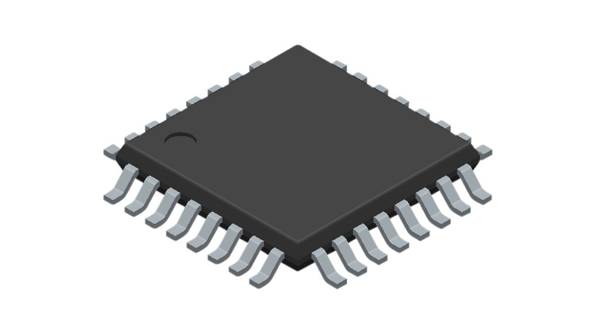

At the end of every year in high school, they had us fill out an advising form where we had to list our career aspirations. Every year I wrote down electrical engineering. I had always enjoyed the more hands-on challenges that electrical engineering provided. However, I took one coding class in my senior year and ended up switching to a computer engineering major when I entered university. I didn’t fully convert to the software side of things, as I still enjoyed tinkering with hardware, but taking that class made me realize how effective a few lines of words could be in optimizing a multitude of tasks in my daily life. when I first started college, I began learning to code seriously. I used it to create small projects all the time. I used scripts to organize my downloads into neat folders, to plot data in a visualy pleasing manner, and most useful of all, LaTex got me a lot of A’s on lab reports. This started my journey with code and nowadays I’m focused on improving my ability to integrate software engineering with hardware to optimize the tasks I do most commonly.
For a computer/electrical engineer, hardware and electronics is a big part of the job. A lot of the systems that are built for specific applications include a variety of different components from different manufactuers. For example, a single biasing control system can be composed of DAQ’s to handle the logic, demultiplexers to control the intended outputs, complicate circuits to modulate those outputs and more. The problem with systems like this is that if you create them haphazardly, they will only be useful for a specific application. If we need to change the type of input we give the system, or the type of output we receive from the system, things start to break. This is where I think a proficiency in software engineering can be hugely beneficial, especially languages like JavaScript.
One of my main interests in engineering is embedded systems. These systems combine hardware with software, often with tiny electronics known as microcontrollers.

Figure 1: A Microcontroller Source: Electronics Lab, 2020.
These microcontrollers act like tiny computers that have code on it that the electronics connected to it use to automatically complete a set of tasks very efficiently. For common tasks, it often suffices to have the microcontrollers code be relatively simple. For example, a popular engineering hobbyist microcontroller kit, the Arduino, sells boards with a microcontroller and all the additional electronics you could want already soldered to the PCB. This powerful tool can be used to power simple tasks like LED timings, motor cars, and more through simple code, similar to C. However, it becomes more powerful when we combine this hardware level software engineering with the higher level stuff. This is a skill I want to improve upon. With higher level software languages, interfaces can be made in which the user can communicate with the hardware more efficiently, even if the user doesn’t know how the hardware works. The backend of the systems are still better suited to lower level languages like C, since it allows the developer to access memory directly, meaning faster code. However, from a commercialization viewpont, not every user will know how each component of your system works. This is why I think JavaScript is useful. Frontends are user friendly because configurations can be made by the user, without going down to the hardware level.
My focus for the future is to become proficient in toolsets used for frontend development like Meteor and Bootstrap. With these tools, it is possible to create GUI’s for complicated electronics systems that anyone can use. Currently, I work in a very specialized field, researching metasurfaces. There is a lot of testbeds that I must develop to verify the performance of any devices I fabricate. For each test I must perform, I normally create a specialized testbed to make the process more efficient. However, with the proficient skills in software engineering and frontend development, I hope to create a UI that I can use to communicate with muliple instruments without having to manually open my scripts to change lines of code.